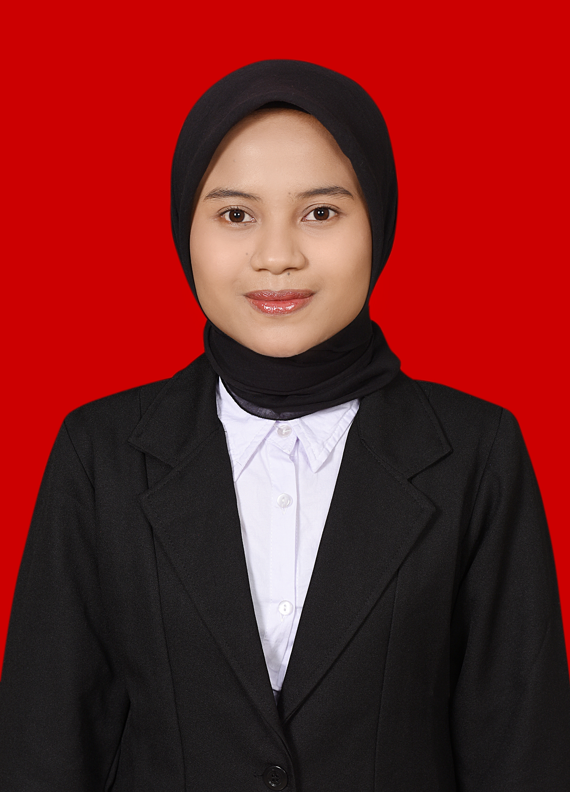

“Kenali Rekam Jejaknya, Tentukan Pilihannya.”

VISI
Terwujudnya Desa Sanca yang maju, sejahtera, religius, dan transparan melalui pelayanan yang adil dan pembangunan yang berkelanjutan.
MISI
Mempermudah warga mengurus administrasi tanpa berbelit dan tanpa pilih kasih.
Mendorong usaha warga tumbuh lewat pendampingan, akses modal, dan pemasaran bersama.
Anggaran dan program desa dapat diperiksa dan dipertanggungjawabkan ke warga.
Mendukung sekolah, TPA, dan kegiatan keagamaan agar generasi muda tumbuh cerdas dan berakhlak.
Memperbaiki jalan, saluran air, dan fasilitas umum secara bertahap dan merata.
Membuka peluang kerja dan pelatihan keterampilan bagi warga usia produktif.
Menjaga tradisi dan kesenian lokal tetap hidup di tengah kemajuan zaman.
Memperkuat ronda dan kerja sama warga demi desa yang aman dan tenteram.
PROGRAM UNGGULAN
Sentuh setiap huruf untuk membaca nilai yang menjadi pegangan dalam mengabdi.
Kenali program kami — klik setiap huruf untuk melihat penjelasannya.